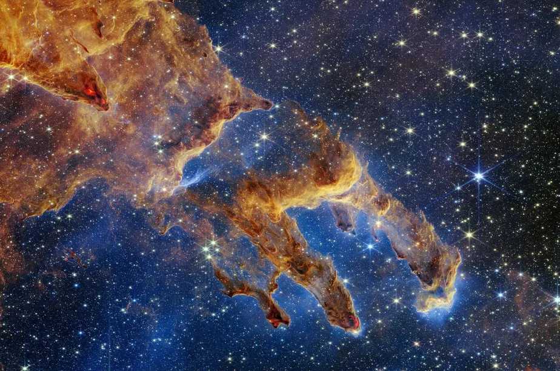

Nebulosas são vastas nuvens interestelares compostas de gás, poeira e plasma, que podem ser encontradas em diferentes regiões da galáxia. Elas desempenham um papel fundamental na formação e evolução das estrelas e planetas, além de oferecerem um espetáculo visual deslumbrante para astrônomos e observadores do espaço.
Existem vários tipos de nebulosas, cada uma com características únicas. Nebulosas de emissão são regiões onde o gás é aquecido por estrelas próximas, emitindo luz característica. A famosa Nebulosa da Águia é um exemplo, conhecida por sua "Pilares da Criação", onde novas estrelas estão se formando. Nebulosas de reflexão, por outro lado, não emitem luz própria, mas refletem a luz das estrelas vizinhas, criando belos tons azuis.

Nebulosas de supernovas são criadas quando uma estrela massiva explode em uma supernova, liberando materiais para o espaço. Essas nebulosas são frequentemente vistas como cascas expansivas de gás, testemunhos das explosões cataclísmicas que ocorreram. Nebulosas planetárias, por sua vez, se formam quando uma estrela envelhecida e moribunda lança suas camadas exteriores para o espaço, revelando um núcleo quente e denso no centro.